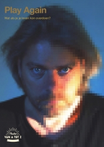
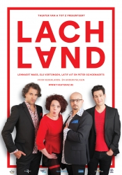
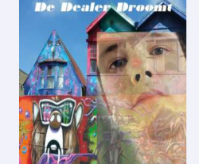

Voorstellingen die deze week worden vertoont.
Web @tt@ck: over gevaren van internet, privacy, cyberpesten
Dat sociale media niet meer uit ons leven weg te denken is, dat is een vaststaand feit. Sociale media is fun! Maar spijtig genoeg wordt er van het medium ook veel misbruik gemaakt, bij volwassenen maar ook bij jongeren.
Play again : over (zinloos) geweld
In dit toneelstuk en in deze workshop is geweld niet enkel de stuwende kracht, maar het hoofdthema. We willen de jongeren daarover aan het discussiëren krijgen. Wat als je je leven kon overdoen? Stef zit in de gevangenis wegens zinloos geweld, maar hij kan vervroegd vrijkomen. De overheid experimenteert namelijk met een nieuwe manier om misdadigers over zichzelf en de wereld te laten nadenken. Via virtual reality kunnen ze hun leven overdoen, en krijgen ze een nieuwe kans. Zal het Stef lukken om, mede dankzij de actieve participatie van het publiek, deze keer betere levenskeuzes te maken?
LACHLAND : Humor voor anderstaligen
Bij ons is ironie of stand-upcomedy heel gewoon, maar dat is het niet overal ter wereld. Wat is humor? En wat is grappig? En waarom vindt de ene iets grappig en de andere niet? Er is niets zo ernstig als humor. Daarom wijden we er een hele voorstelling aan. Om anderstaligen met een andere culturele achtergrond te laten kennismaken met wat in Vlaanderen grappig is, en om Vlamingen te laten kennismaken met humor uit de rest van de wereld.
De Dealer droomt
Serge studeert laatste jaar apotheker. Drugs hebben hem nooit geïnteresseerd. Zijn zestienjarige zus, Lara, wil met haar vriendinnen na de examens voor het eerst dolgraag naar de discotheek gaan. Zijn moeder maakt zich zorgen omdat er verteld wordt dat er drugs te krijgen zouden zijn. Serge vindt dat zijn zus het recht heeft om eens goed uit te gaan en zich te ontspannen. Maar Lara gebruikt xtc en de gevolgen zijn groot. Serge voelt zich schuldig.
Dronken in de rook: over alcohol en drugs.
Roken… het ziet er best stoer uit.
En het lijkt eigenlijk heel onschuldig, zo'n sigaret tussen je vingers.
Toch doet roken vreselijke dingen met je lichaam.
Je kunt er maar beter niet aan beginnen.
En drugs... maken je leven helemaal kapot.
Alcohol…
Bevindingen van een studie:
Op hun twaalfde drinken Belgische jongeren hun eerste pintje.
Twee jaar later houden ze van sterke drank in hun handen.
Zes procent van de achttienjarige jongens is al fysiek verslaafd.
Je kunt er maar beter niet aan beginnen.
Volgende week zijn er weer gloednieuwe voorstellingen in onze zalen dus kom zeker eens een kijkje nemen.